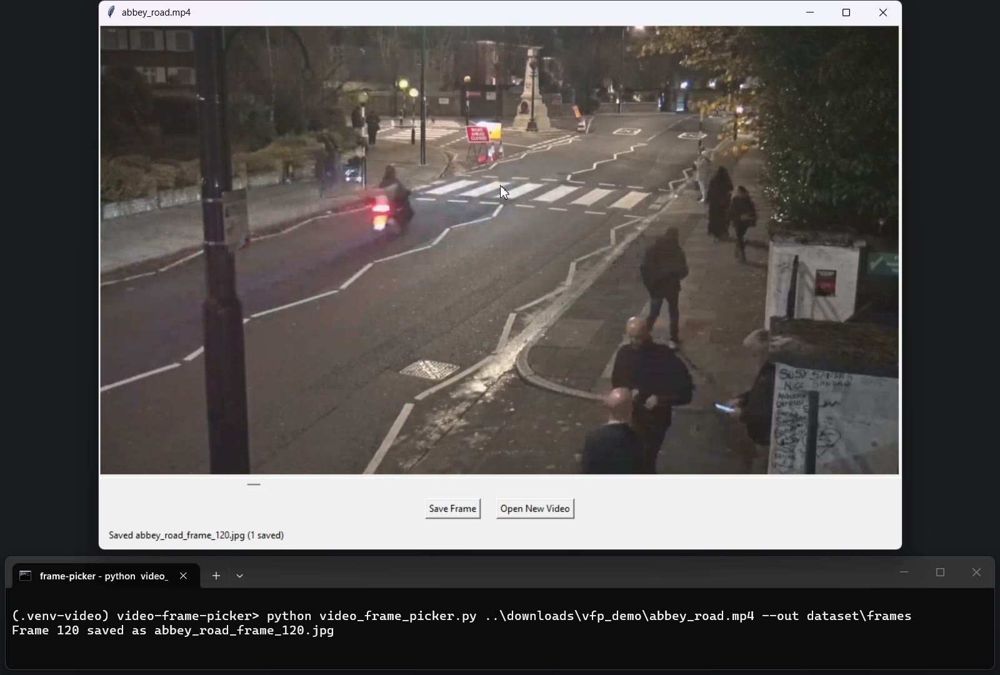
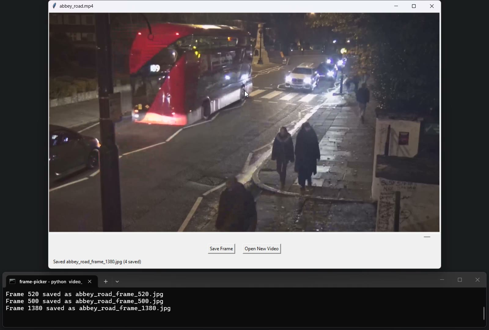

Keyboard first
Choosing images is repetitive; with one key per action the hands stay on the keyboard and the eyes on the image.
Every computer vision project starts with choosing images. Video Frame Picker turns that chore into a keyboard rhythm: jump through hours of video in steps of 40, 200 or 800 frames, press Space on the moments worth labelling, then run through a folder of photos and keep only the useful ones. Nothing to train and nothing to configure: open a video or a folder and start picking.
The frame picker reads the video with OpenCV and only decodes the frame you land on, so jumping through a long recording stays instant. The frame saved is exactly the one on screen, at full resolution. The image picker then walks through any folder of photos and copies the keepers to an output folder, leaving the originals untouched.



A 15-second example video and six photos live in the repo's examples/ folder, so the same workflow can be tried right after installing.
git clone https://github.com/karemdm/video-frame-picker.git
cd video-frame-picker
python3 -m venv .venv
source .venv/bin/activate
pip install -r requirements.txtgit clone https://github.com/karemdm/video-frame-picker.git
cd video-frame-picker
python -m venv .venv
.venv\Scripts\Activate.ps1
pip install -r requirements.txtgit clone https://github.com/karemdm/video-frame-picker.git
cd video-frame-picker
python -m venv .venv
.venv\Scripts\activate.bat
pip install -r requirements.txtpython video_frame_picker.py examples/abbey_road_15s.mp4 --out dataset/framespython image_picker.py examples/street_photos --out dataset/imagesChoosing images is repetitive; with one key per action the hands stay on the keyboard and the eyes on the image.
Seeking jumps straight to the target frame instead of playing the video, so long recordings stay responsive.
Tkinter ships with Python, so the only extra packages are OpenCV and Pillow; it runs the same on Windows, macOS and Linux.
File names carry the video name and frame index, which makes it easy to go back to the footage or avoid near-duplicate frames.
The image picker copies, it never moves or edits, so the source folder stays intact.
The preview is sized to each video and keeps its aspect ratio, from portrait phone clips to wide 4K footage.